My project draws inspiration from my grandad's journey along the 1970s "Hippie Trail," where he travelled across Europe and Asia, collecting mementos and stories that have informed the development of my work.
Influenced by the era's spirit of peace, freedom, and rejection of materialism, the project explores themes of nostalgia, storytelling, and heritage through craft and textile design.
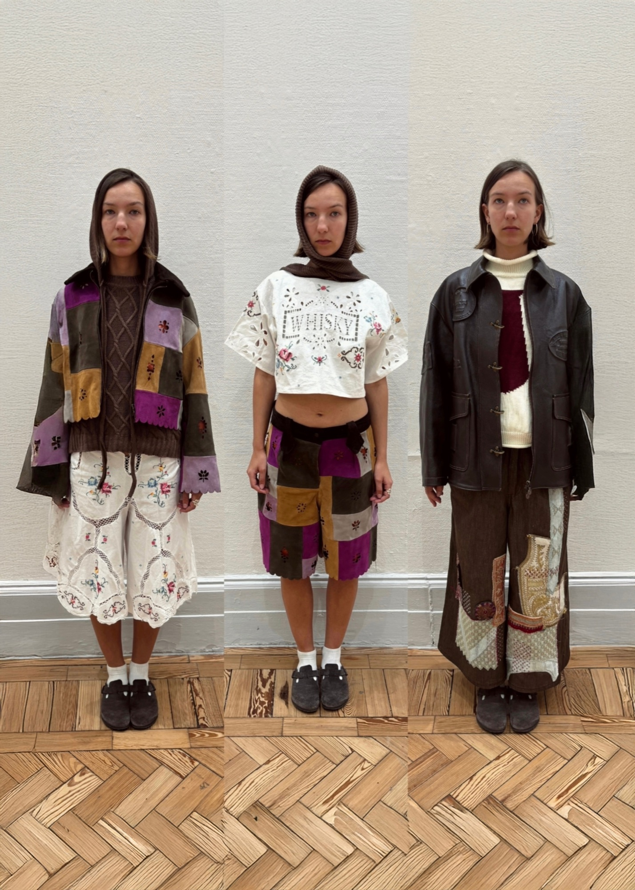
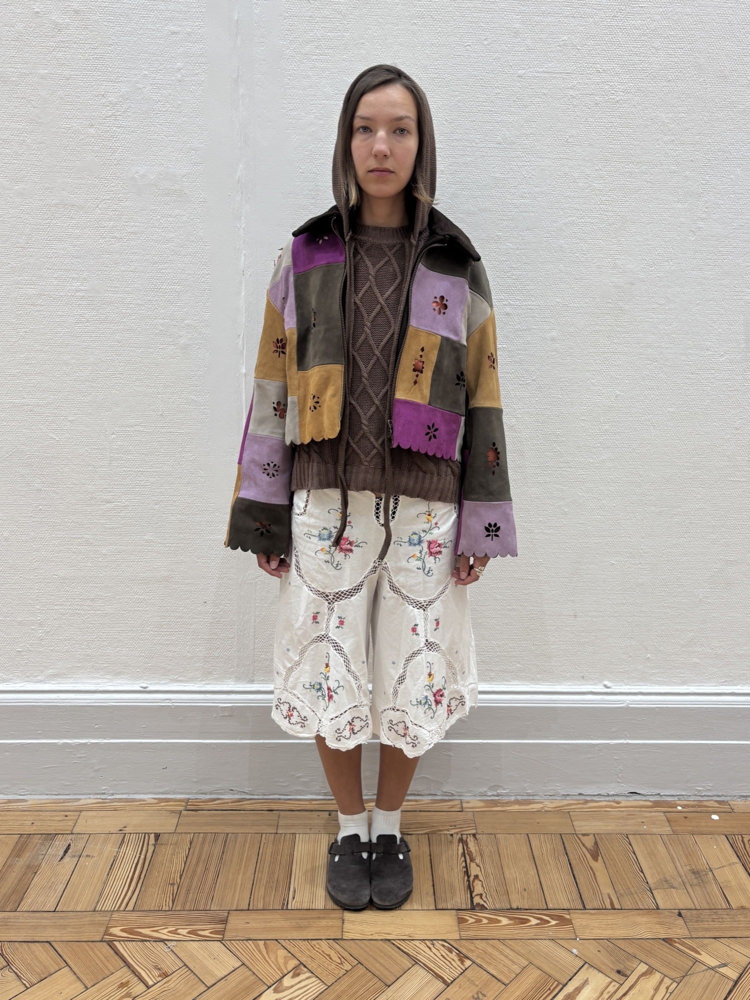
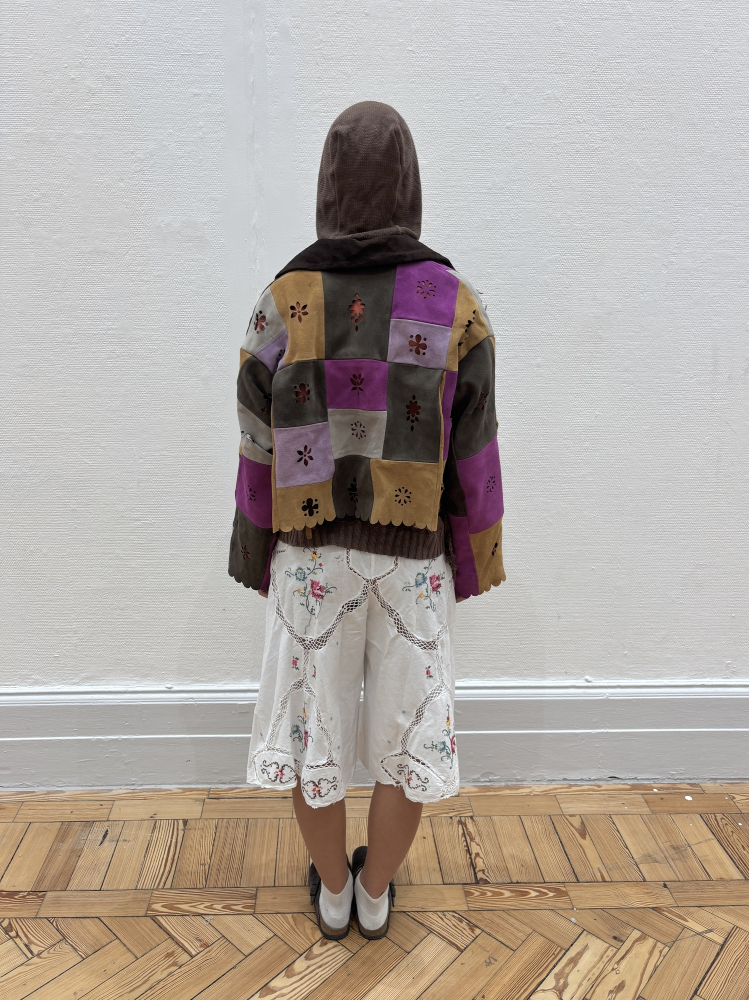
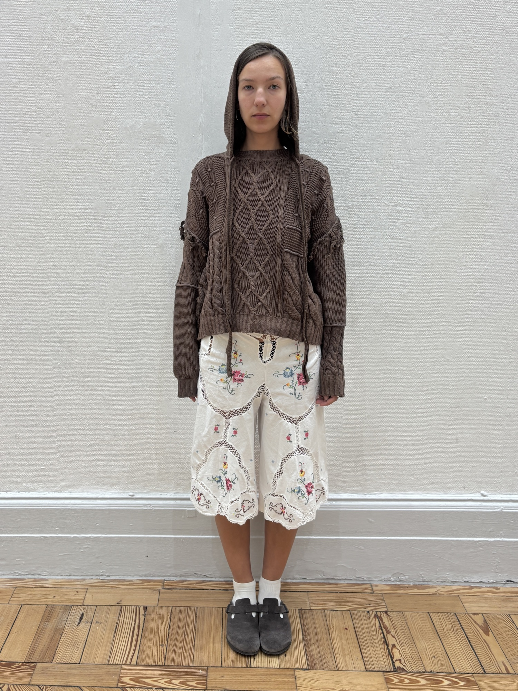
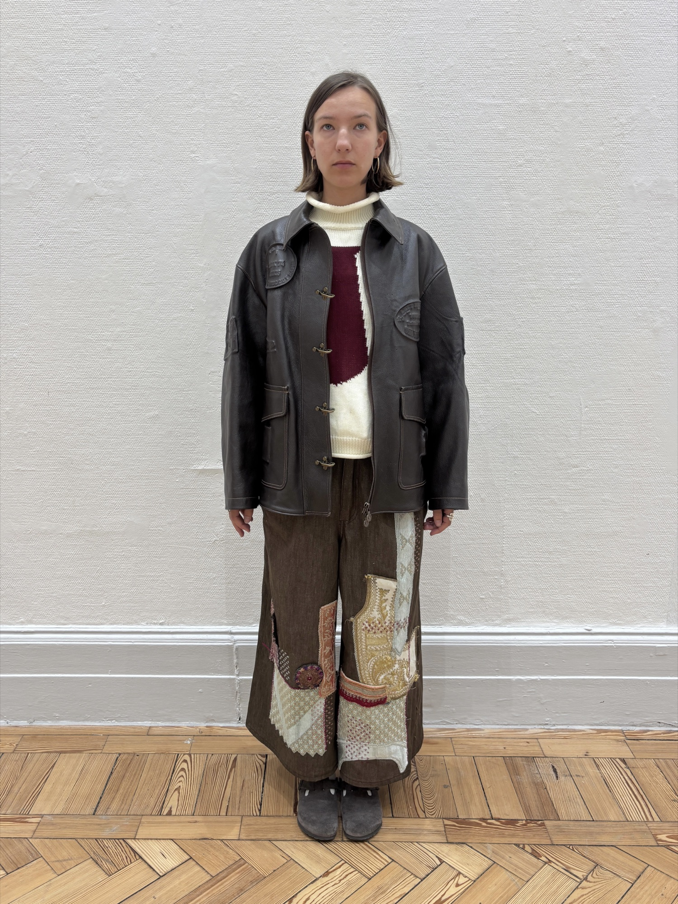
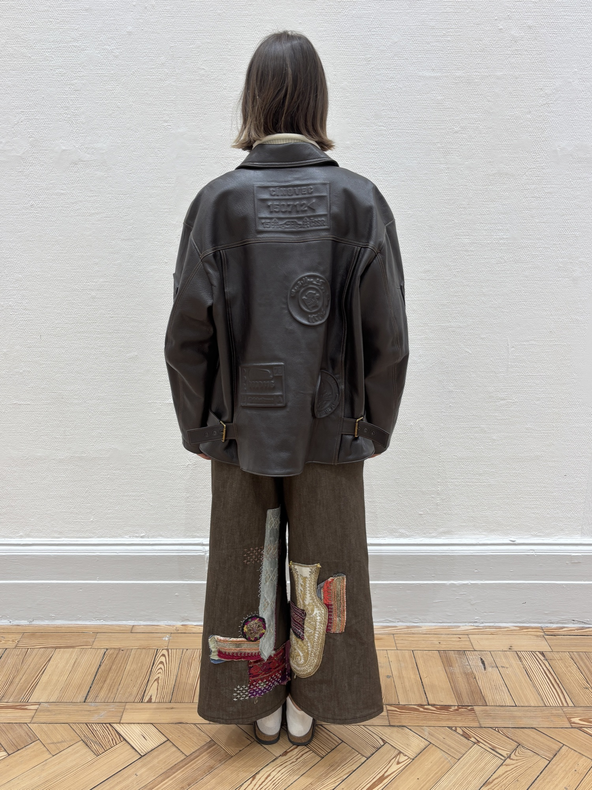
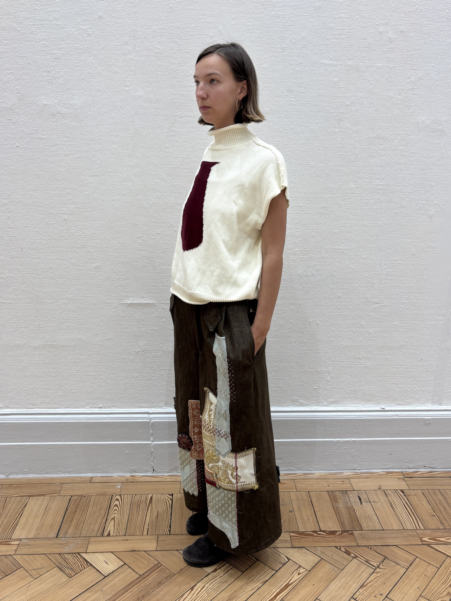
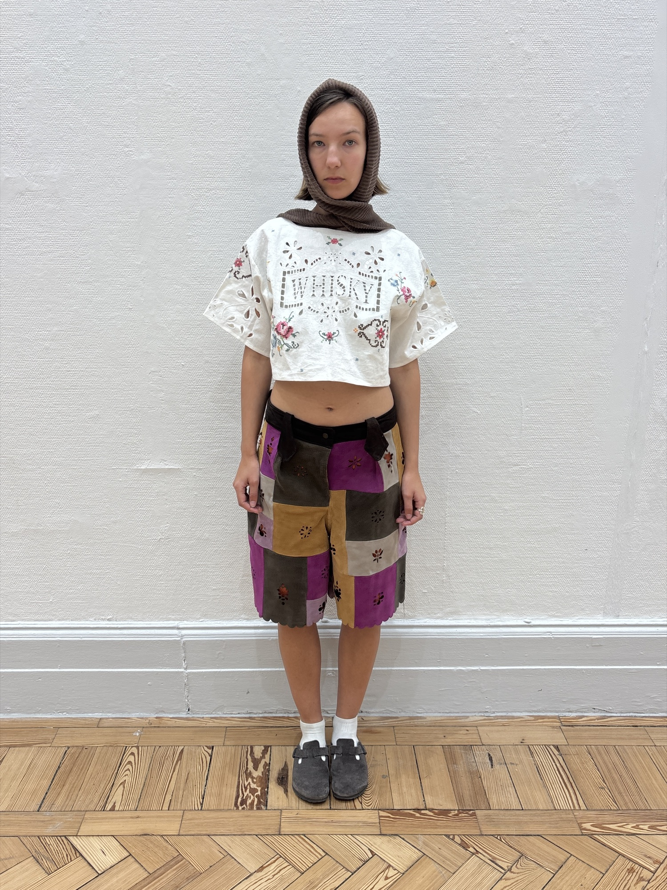
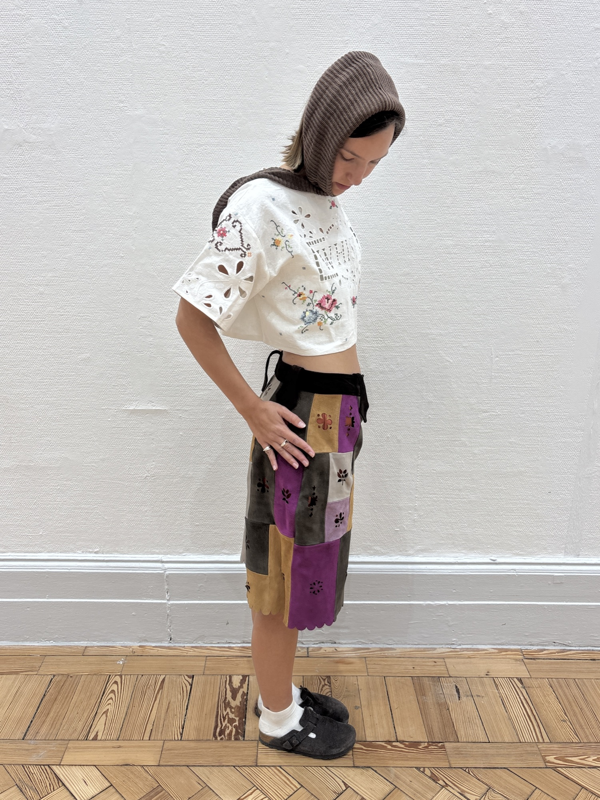
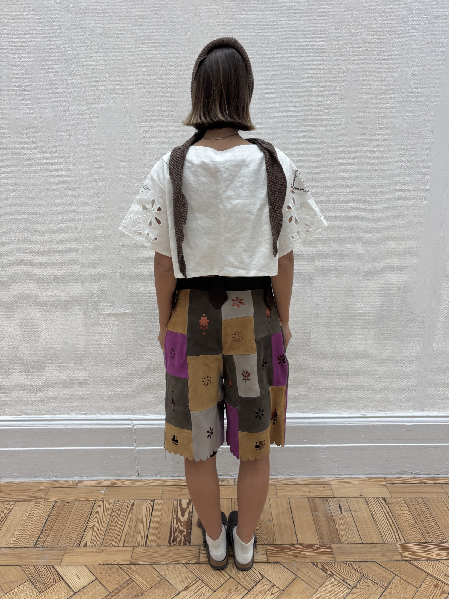
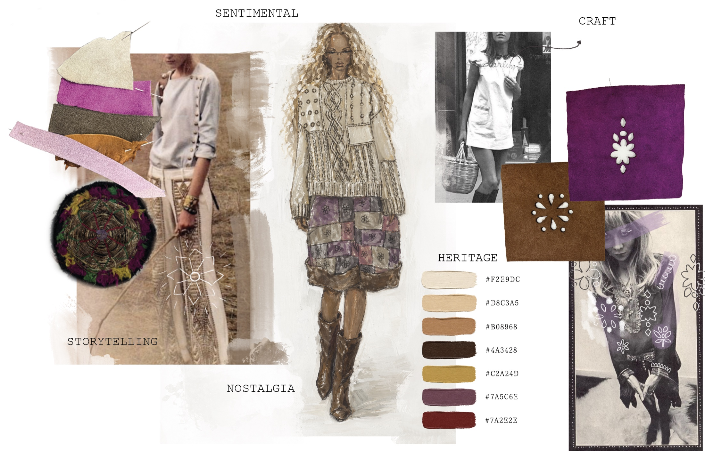
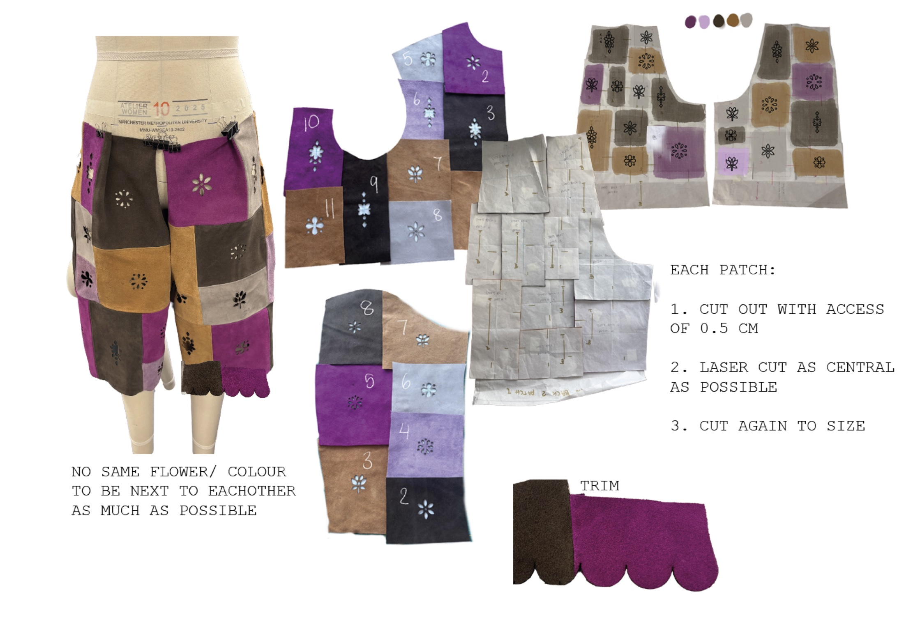
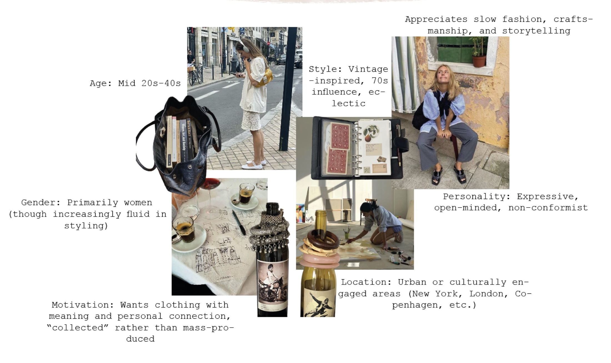